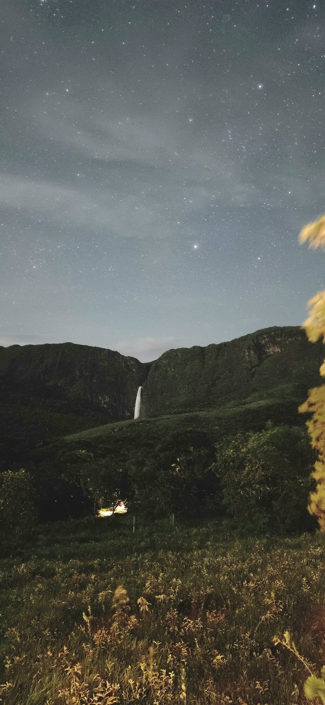
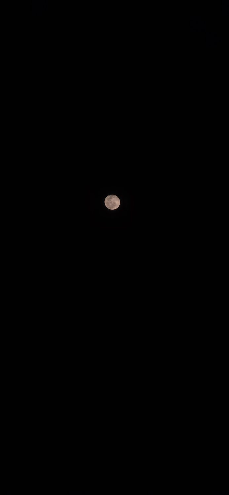

Começa no chão, com um mapa
Minha formação é em engenharia ambiental, e o meu ofício começou em geoprocessamento e sensoriamento remoto. Antes de qualquer modelo, existe um território que precisa ser medido direito.
No DNIT, de 2022 a 2025, fui engenheiro e responsável técnico em geoprocessamento e banco de dados na Coordenação de Levantamentos para Planejamento. Cuidei da base geoespacial do Sistema Nacional de Viação, criei a automação dos Mapas Multimodais, validei a topologia e gerei as rotas do SNV aquaviário, e determinei o número de faixas da malha rodoviária para a modelagem de tráfego do PNCT.
Na CODEMGE, no Plano Estadual de Logística e Transportes de Minas Gerais, cuidei do banco PostgreSQL/PostGIS do plano, vetorizei e analisei espacialmente a carteira de empreendimentos e mantive as bases atualizadas para um planejamento com horizonte em 2055.
Na Polícia Rodoviária Federal, há dois anos, sou cientista de dados sênior a serviço da Diretoria de Tecnologia da Informação e Comunicações: APIs geoespaciais, modelos para tráfego e segurança viária, IA para dados não estruturados e produtos auditáveis junto à Corregedoria.
Entre 2015 e 2023 fui professor universitário em 26 disciplinas no Centro Universitário de Patos de Minas. Em paralelo, desde 2015, atuo como consultor e fundei a GFX GEO, empresa de engenharia em geotecnologias e ciência de dados.


Cartografia artística
Também transformo mapas antigos em obras de arte: carta histórica, modelo de elevação e luz. Passe o cursor para aproximar. Ver o processo na página da GFX GEO


Depois, a câmera aponta para cima
Nas horas vagas faço astrofotografia de longa exposição no meio do mato, em ângulos questionáveis. Estas fotos são minhas. O céu do topo desta página é uma homenagem a elas.




Cada projeto de alta relevância é uma estrela
As constelações são as instituições. Passe o cursor numa estrela (ou toque, ou use Tab) para ver o projeto como um blueprint em camadas: dados, processamento, modelo e produto. Clique para abrir.
Ou entre por área
Ciência de dados e IA, direto do terminal
Carreira, stack, certificações, projetos, empresa e formação. Clique nas abas ou digite um comando, como stack python ou projetos --prf.
Dica: ajuda lista tudo. Cada tecnologia em stack abre os projetos onde ela foi usada.
Eu era um explicador
Antes dos dados, dos modelos e das APIs, tem uma história. Ela começa com um jardineiro, uma turma de engenharia civil e um pé de manga.
O que eu leio e estudo
O mecanismo está pronto: prateleiras por tema, lombadas, capas. Passe o cursor num livro para tirá-lo da prateleira. Por enquanto ela mostra uma prévia com 14 títulos do meu acervo técnico. A estante de verdade entra quando eu terminar de marcar o que li.
Passe o cursor ou toque num livro.
É desta estante que sai a mentoria que eu ministro. Ela, a GFX GEO e o GFX Hub têm casa própria; aqui ficam só citados.
Descobrir banda nova e apresentar aos amigos
É um hobby antigo: vivem me pedindo playlists. Fui músico profissional na adolescência e aprendi sozinho violão, guitarra, gaita, flauta, baixo, bateria, percussão, teclado, ukulele, viola caipira e piano. Esta é a minha playlist favorita, no player oficial.
A coleção de discos ainda vai ser catalogada. Por enquanto, o prato gira com a playlist.
Um orgulho de garimpo: apresentei Grey Daze a muita gente que não sabia que o Chester Bennington, do Linkin Park, tinha cantado lá antes.
Quem mais aparece nas 100 primeiras faixas
- The Lumineers6
- Audioslave4
- Blind Melon4
- Slash4
- The Milk Carton Kids4
- Alice In Chains3
- Chris Stapleton3
- The Last Internationale3
- Foy Vance3